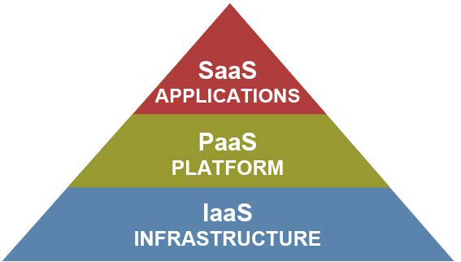

Tipos de Serviço
Infrastructure as a service (IaaS)
Esse tipo de modelo de serviço fornece recursos de infraestrutura como um serviço aos usuários finais. Esse modelo fornece aos usuários processamento, armazenamento, redes entre outros recursos necessários para rodar algum software e sistema operacional. O provedor controla e gerencia a infraestrutura da nuvem e o usuário tem controle sobre os recursos em si. O usuário pode também ter algum controle sobre os serviços de rede.
Platform as a service (PaaS):
Nesse modelo de serviço, é fornecido ao usuário final uma plataforma que utiliza a infraestrutura da nuvem. O provedor gerencia o sistema operacional, rede ou armazenamento e o usuário final tem controle sobre as aplicações e seus ambientes de hospedagem.
Software as a service (SaaS):
Esta camada oferece software como um serviço aos usuários, como um mecanismo de cálculo online. O usuário final pode acessar este software usando uma interface de cliente leve como através de um navegador web. Deve ser destacado que o usuário final não gerencia a infraestrutura da nuvem que está por baixo do software como rede, servidores ou sistema operacional.

Mineração de Grandes Volumes de Dados na Nuvem
A medida que os volumes de dados continuam a crescer exponencialmente, esta quantidade pode facilmente sobrecarregar as ferramentas analíticas ou plataformas tradicionas designadas a absorver e analisar justamente estes dados.
Segundo um artigo de 2013, naquela época eram produzidos 2,5 quintilhões de dados diariamente, sendo que 90% dos dados do mundo haviam sido produzidos nos ultimos dois anos. Considerando que hoje a internet é mais difundida do que em 2013, a lógica é que esses números sejam ainda mais extremos.
O desafio que encaremos não é apenas como armazenas e gerenciar dados diversificados mas também como efetivamente analizá-los a fim de desenvolver o conhecimento necessário para tomar decisões mais inteligentes.
O artigo, "Cloud-based Big Data Mining & Analyzing Services Platform integrating R", propõe uma arquitetura que integra infraestrutura, virtualização, processamento e serviços. Isto é, propõe utiliza Apache CloudStack em conjunto com Hadoop e R para constituir uma plataforma de mineração de grandes dados e serviços de análise na nuvem.
Neste modelo de arquitetura, CloudStack ficaria instalado na camada de virtualização, configurado e implantado para construir clusters de máquinas virtuais e então usado para gerenciar os recursos de infraestrutura. Hadoop, NoSQL entre outros bancos relacionais ferramentas poderiam ser instalados no cluster de máquinas virtuais. Nesta camada, de acordo com possíveis requisitos de negócio, múltiplas soluções de gerenciamento de dados poderiam coexistir (cluster MySQL e HDFS).
Diferentes soluções de gerenciamento de dados e ferramentas de armazenamento diversas seriam aplicáveis a diferentes tamanhos ou tipos de dados. Por exemplo, se o recurso local de uma determinada máquina virtual é suficiente para o processamento dos dados, então, não será necessário utilizar Hadoop.
Acima da camada de virtualização está a camada de processamento de dados. Esta camada consiste de um ambiente de execução da linguagem R e ambiente RHadoop. O ambiente de execução da camada R fornece muitas funções como: estatísticas, análises, gráficos e assim por diante. Já no ambiente Rhadoop há a biblioteca Rhadoop.
Conexão e funções analíticas assim como operações de manipulação de dados via MySQL e cluster Hadoop são atividades suportadas pela camada de processamento de conjunto de dados. Esta camada recebe da camada de serviço várias requisições que são eventualmente processadas de modo que os resultados são posteriormente retornados a camada de serviço.
Big Data e Cloud
Computação na nuvem tem fundamentalmente mudado o cenário de computação em larga escala. Usuários agora podem rapidamente instanciar máquinas virtuals e utilizar plataformas escaláveis para servir suas aplicações.
Cloud-Get e CloudStack:
Cloud-get é uma proposta do artigo "Big Data Platforms as a Service: Challenges and Approach" que tem variados serviços visando facilitar o uso de aplicações CloudStack(gerenciador de serviços, repositório de pacotes e gerenciador de dados) são instanciados como um conjunto de máquinas virtuais gerenciados pelo CloudStack.
Como muitas plataformas de IaaS, CloudStack inclui muitas oportunidades de controle de recursos virtuais de baixo nível. Por exemplo, CloudStack permite máquinas virtuais alocarem espaço de armazenamento de uma variedade de pontos de armazenamento, incluindo compartilhado (
iSCI
) e local (anexado diretamente a um hospedeiro físico).
 Figura: Usuários interagem com a API Cloud-Get através de ferramentas de linha de comando. Cloud-Get, em retorno, interage com com a camada de gerenciamentor subjacente da nuvem.
Figura: Usuários interagem com a API Cloud-Get através de ferramentas de linha de comando. Cloud-Get, em retorno, interage com com a camada de gerenciamentor subjacente da nuvem.
Consolidação de Máquinas Virtuais
Uma solução emergente para a economia de energia nos data centers das nuvens é consolidação de máquinas virtuais. Isto é, basicamente criar uma snapshot do sistema de forma mais eficiente. Uma política de consolidação de máquinas virtuais deve ser ajustada adequadamente, dependendo da situação. A fim de facilmenter aplicar uma solução de consolidação de máquina virtual, o artigo "A Virtual Machine Consolidation Framework for CloudStack Platforms" propõe uma estrutura de consolidação utilizando três tecnologias juntas: Apache CloudStack, Zabbix e Node.js. Será feita aqui apenas uma introdução de como CloudStack é utilizado para esta finalidade, sem delongas sobre as outras tecnologias.
Existem diversos conjuntos de software de IaaS abertos para a construção de ambientes em nuvem privados voltados a empreesas como os centro de dados da nuvem da Amazon.
Os mais conhecidos são CloudStack, OpenStack, Eucalyptus e OpenNebula. Entre estas tecnologias, CloudStack tem crescido rapidamente em popularidade no mercado de software em nuvem pois permite implentar e gerenciar nuvens privadas multi inquilino (multi-tenant) com máquinas virtuais de larga escala. CloudStack também suporta um número de hipervisores populares como visto anteriormente: KVM, Vmware e XenServer.
Usuários podem faiclmente gerenciar suas nuvens através de uma interface web ou ferramentas de linha de comando.
CloudStack e KVM suportam bem a migração em tempo real (live migration) de múltiplas máquinas virtuais. Migração em tempo real se refere ao processo de transferir uma máquina virtual operante entre servidores físicos distindos sem disrupção dos serviços, incluindo memória, armazenamento e conectividade com a rede. Esta é uma tecnologia importante quando o objetivo é migrar a máquina virtual sem interrupções dos serviços que estão operando. CloudStack também inclui a capacidade de verificar se uma dada máquina virtual e o servidor de destino são adequados para a migração, considerando as necessidades de cada pedido.
Usuários CloudStack
A fim de exemplificar como CloudStack é amplamente difundido e utilizado por diversas grandes empresas, foram selecionadas algumas empresas com as quais o leitor provavelmente já está familiarizado.
Apple: é uma empresas multinacional de tecnologia que projeta, desenvolve e vende produtos eletrônicos, software de computador e serviços online

Autodesk: é uma corporação multinacional que produz software para arquitetura, engenharia, construção, mídia, indústria do entretenimento além do setor industrial de produção.
Dell: uma empresa que desenvolve, produz, dá suporte e vende uma grande variedade de computadores pessoais, notebooks, servidores, entre outros periféricos.
Disney: é o segundo maior conglomerado de mídia e entretenimento do planeta por receita.
Globo.com: é um portal e provedor de internet pertencente ao maior grupo de mídia da América Latina, o Grupo Globo.
Nokia: é uma multinacional finandesa que atua nas áreas de comunicação, tecnologia da informação e produtos eletrônicos.